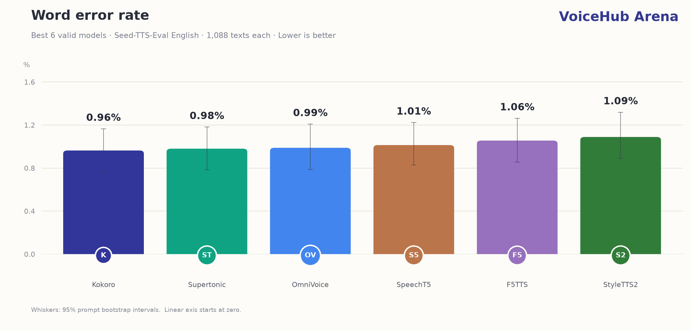
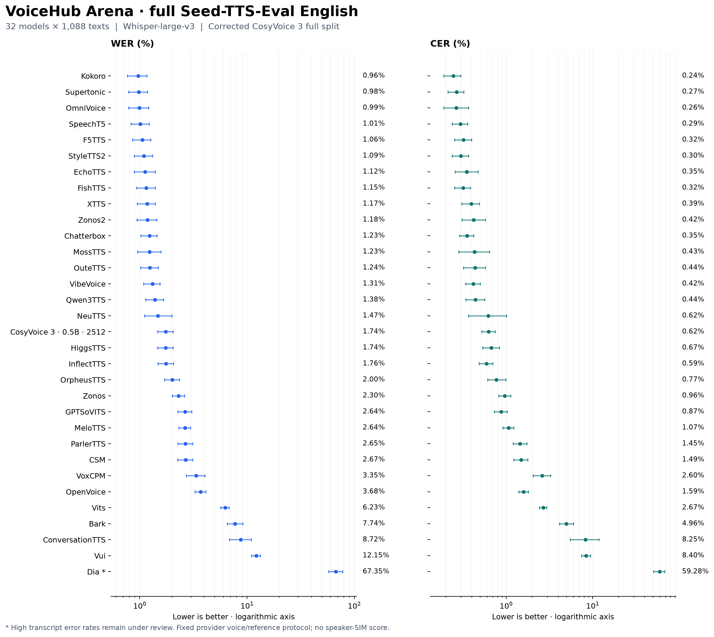
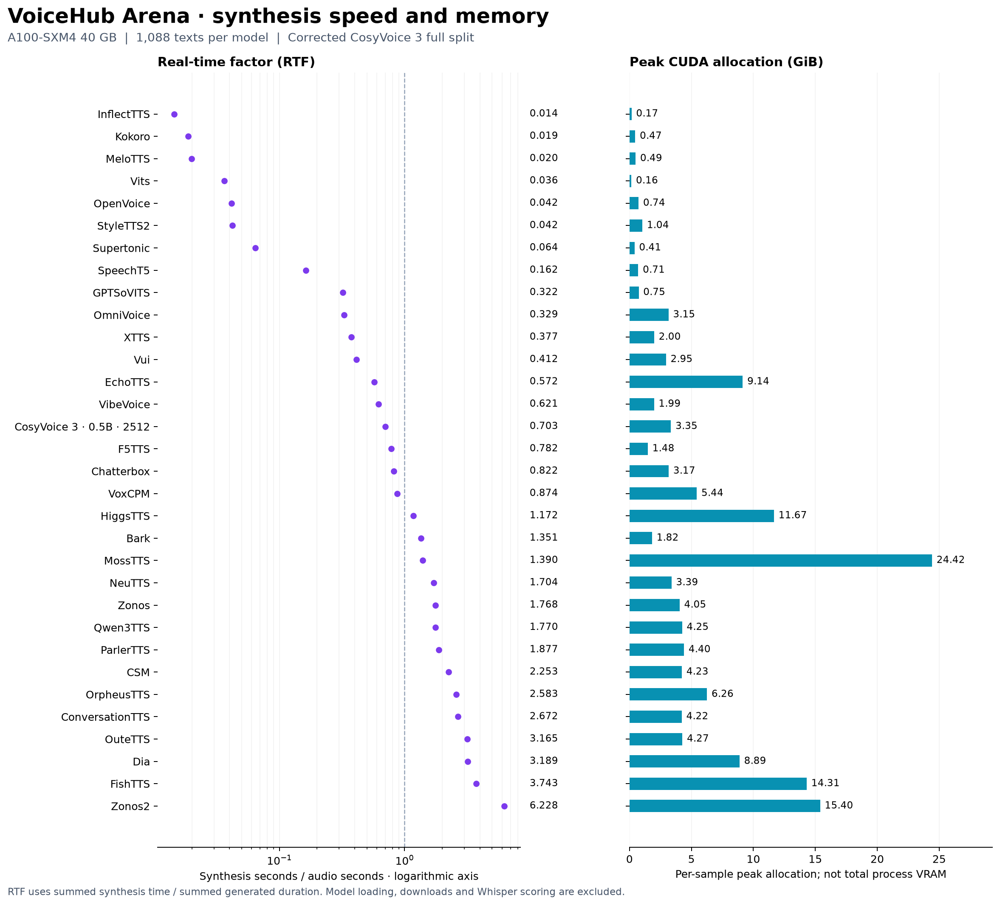

Word error rate
Lower is better
Compare text-to-speech models on the complete English Seed-TTS-Eval split. Original and new reference-conditioned configurations are labeled separately. Inspect transcripts, available recordings and explicit generation failures.
Whisper-large-v3 transcription
Fixed provider voices & references
Same 1,088 texts per configuration
All models in one view. Change the metric or search a model family; the complete table stays below.
| Model | WER | 95% confidence interval |
|---|
Corpus error rates. Lower WER, CER and RTF are better.
Reference badges identify new experiments with fixed reference audio and independent model implementations; the original provider configurations remain separate rows. Select a model name to listen. WER/CER intervals are 95% prompt bootstrap intervals; small rank differences may not be meaningful. ● Review marks a confirmed or unresolved quality issue. CosyVoice now uses the verified corrected full run; its original invalidated score remains archived.
All 1,088 texts per model, with targets, ASR transcripts and original WAV files.
Preview the best six for each metric. Download the 32-model baseline chart as PNG or SVG.
Every axis starts at zero. WER/CER whiskers are 95% prompt bootstrap intervals. Speed and memory have no measured confidence intervals. Current charts include the corrected CosyVoice score. Invalidated historical scores are preserved in the correction report. * indicates quality under review. These are measured benchmark values, not Elo ratings.
Current full-run plots include corrected CosyVoice. The correction report preserves the original plots and measurements.
Logarithmic axes, with 95% confidence intervals. All selected baseline models remain visible.

RTF excludes loading, downloads and ASR. Memory is peak CUDA allocation, not total process VRAM.

The 32 selected baseline models synthesize the same 1,088 English texts with seed 42 and one repeat. WER and CER aggregate edit counts across the corpus, rather than averaging shard percentages. Recognition uses pinned Whisper-large-v3 and whisper_english normalization.
WER measures word edits; CER measures character edits. Both estimate intelligibility through ASR. They do not measure naturalness or speaker similarity. Fixed provider voices and references mean this is not the official zero-shot speaker-identity/SIM protocol.
CosyVoice’s vocoder defect is repaired and its complete corrected result is shown. Dia and Llasa completed inference but have high transcript error rates whose causes are still under review. The old Multilingual Llasa run is archived and excluded from the active selection. Empty ASR text alone does not prove silence. Successful inference is not a guarantee of good speech.
MER / WIL / WIP: match error rate, word information lost and word information preserved. Lower MER/WIL and higher WIP are better. Exact match: fraction of normalized target/transcript pairs that match exactly.
RTF: summed synthesis seconds / summed audio seconds; below 1 is faster than real time. Latency p50/p95: synthesis time percentiles. Silence/clipping: measured signal diagnostics, not subjective quality ratings.
ASR: Systran/faster-whisper-large-v3, revision edaa852ec7e145841d8ffdb056a99866b5f0a478; CUDA FP16, English, beam 5, temperature 0, no VAD or previous-text conditioning. 95% intervals: 1,000 prompt-cluster bootstrap resamples, seed 42.
Coverage verification · Audio hash verification · Original Seed-TTS-Eval
{kind=link}
{kind=link}
{kind=link}
{kind=link}
{kind=link}
{kind=link}
{kind=link}
{kind=link}
{kind=link}
{kind=link}
{kind=link}
{kind=link}
{kind=link}
{kind=link}